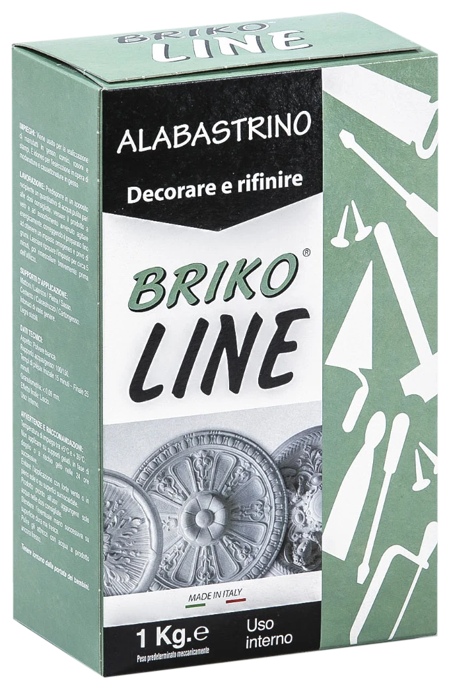
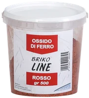
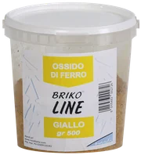
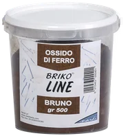
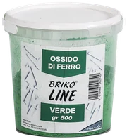
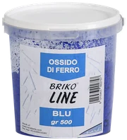
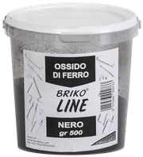
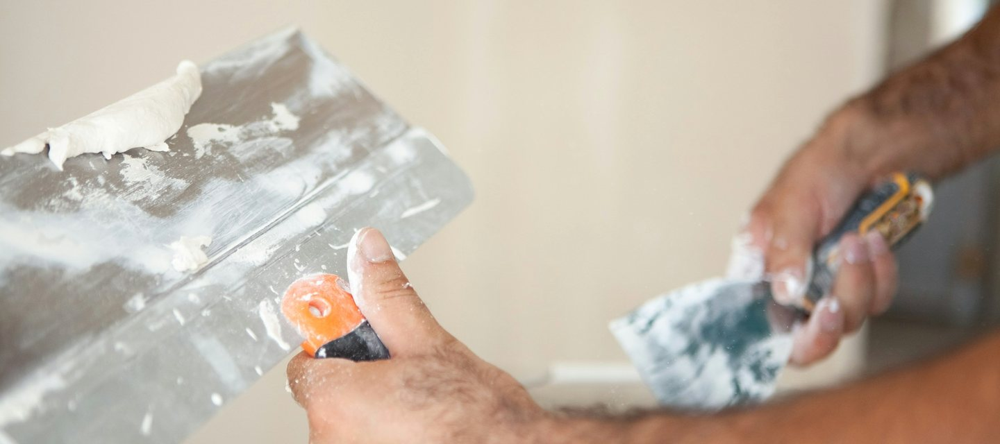
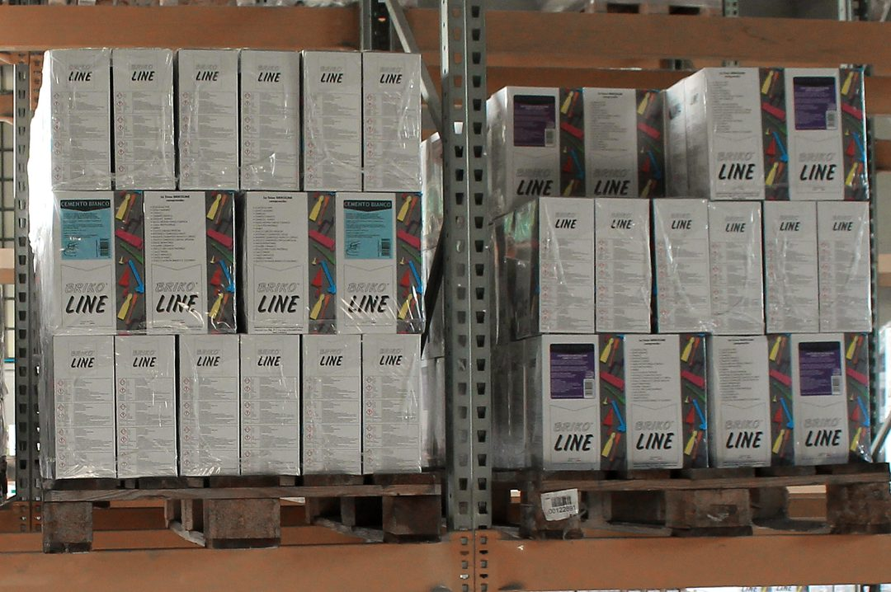

Stucchi, gessi e malte
Polveri e paste per l'edilizia e il fai da te, dalla scatola da 1 kg al sacco da 25 kg. A Tombelle di Saonara (PD), dal 1985.

Decorare e rifinire. Gesso alabastrino, scatola da 1 kg: cornici, rosoni, stampi.
- Inizio presa
- 15-25 min
- Acqua/gesso
- 100/140
Sei famiglie
Quattro linee, 96 prodotti
Sullo scaffale le scatole Briko Line si riconoscono da lontano: il motivo degli attrezzi e un colore per ogni famiglia.
Briko Line 43 prodotti
Per il fai da te: scatole da 1 kg e secchielli da 750 g, in cartoni da 12 pezzi.
La linea Briko LineArtelinea 41 prodotti
Per l'impresa: buste argentate da 5 kg, sacchi da 20 e 25 kg, secchi. Gessi, calci, cementi, malte e colle.
La linea ArtelineaSpeciali e altri 12 prodotti
Rasanti, intonaci di finitura, stucchi per grossi spessori, la malta risanante idrorepellente; poi un fissativo, il mastice per vetri, la rete autoadesiva.
Gli specialiOssidi di ferro 6 colori
Coloranti in polvere, in barattoli da 500 g: si mescolano con malte a base cemento o gesso, oppure alle pitture.

Rosso
Giallo
Bruno
Verde
Blu
Nero

Dal gesso decorativo alle polveri
Benito Nardi apre la ditta nel 1985 e all'inizio fa solo stucchi artistici decorativi in gesso. Per posarli comincia a produrre in proprio lo stucco: è il primo passo verso le polveri.
Con le macchine per confezionare i vari formati la ditta diventa un produttore, e la gamma oggi conta 96 articoli. Dal 2011 un impianto fotovoltaico dà energia alla produzione.
A base di gesso, dal più rapido al più lento
- Murario
- Fissaggio di telai, tracce e fori
- 5-8 min
- Alabastrino
- Cornici, rosoni, stampi
- 15-25 min
- Polvere ceramica
- Colonne, capitelli e statue
- 20-25 min
- Stucco per interni
- Crepe e fori, stucchi decorativi in gesso o legno
- 60 min
- Scagliola
- Modanature e fregi in gesso di grosse dimensioni
- 60-90 min
Tempo di inizio presa, dalle schede tecniche. Quasi ogni prodotto ha la sua scheda in PDF; l'Artestucco E180 ha la dichiarazione di prestazione CE secondo UNI EN 13279-1, reazione al fuoco A1. Schede tecniche e di sicurezza
Ricostruire, livellare, tappare
Prodotti per il privato e per il professionista. Chiamateci per sapere dove trovarli.
Via S. Antonio 24/a, 35020 Tombelle di Saonara (PD)
Dal lunedì al venerdì, 8-12 e 14-18
